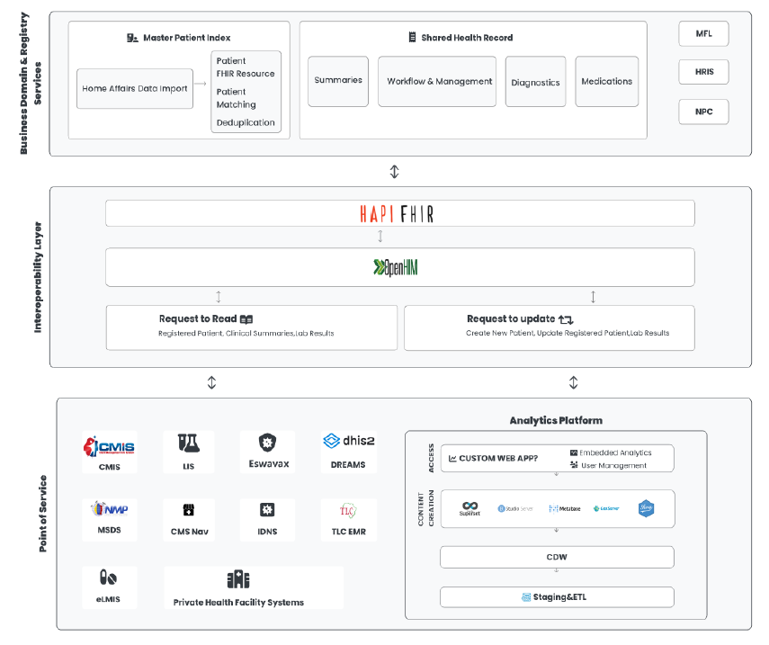

Eswatini HL7 FHIR Implementation Guide
0.1.0 - ci-build
Eswatini HL7 FHIR Implementation Guide - Local Development build (v0.1.0) built by the FHIR (HL7® FHIR® Standard) Build Tools. See the Directory of published versions
| Official URL: http://172.209.216.154:3447/fhir/ImplementationGuide/hl7.fhir.sd.hie | Version: 0.1.0 | |||
| Draft as of 2025-09-10 | Computable Name: EswatiniHIEImplementationGuide | |||
The Eswatini HIE is a digital system infrastructure managed and implemented by the MOH’s Strategic Information Department (SID). Its aim is to counter health system fragmentation and improve data sharing by enabling seamless exchange of clinical information across various healthcare systems.
At its core, the Eswatini HIE is built on a robust, multi-layered architecture that ensures data integrity, privacy, and real-time access. The system accommodates various point of service (POS) applications, such as electronic medical records (EMRs), laboratory information systems, and mobile health platforms, through a secure interoperability layer powered by OpenHIM. Each data payload undergoes rigorous validation through a Health API Fast Healthcare Interoperability Resources (HAPIFHIR) server, while a central master patient index (MPI) and shared health record (SHR) maintain consistent and unified patient records. These components collectively streamline workflows, reduce duplication, and enhance care coordination across healthcare settings, making the Eswatini HIE a cornerstone of the nation’s digital health transformation.
The Eswatini FHIR Implementation Guide is a detailed document that provides instructions on how to use FHIR standards to achieve healthcare interoperability goals. It outlines the necessary steps for implementing FHIR resources, profiles, and interactions to ensure consistent and effective data exchange between healthcare systems. This guide is based on FHIR R4. It outlines the minimum constraints on the FHIR resources to create the Eswatini Profiles. The elements, extensions, vocabularies and value sets that shall be present are identified and how they are used is identified. This establishes the basic standard to promote interoperability and adoption through common implementation.
The Eswatini Health Information Exchange (HIE) architecture is composed of three main layers: the point of service (POS) layer, the Interoperability Layer (IL), and the business domain and registry services layer. A detailed overview of this layered architecture is shown in the figure below.

Figure: Eswatini Health Information Exchange Architecture
This layer relates to the external systems or devices (e.g., EMRs, mobile health apps) that send data to the HIE. The POS layer represents the different health information systems (HIS) that are operational in Eswatini.
The interoperability layer is the main backbone of the HIE platform. This layer facilitates data exchange between the different HIS and the centralized applications. This layer consists OpenHIM as the main applications that enable this exchange.
The Business Domain and Registry Services in the HIE architecture are essential for integrating and managing health information systems across the country. Key components include the MPI, which assigns unique identifiers to patients to ensure accurate linking and retrieval of records, and the FHIR Based Shared Health Record, a centralized repository that consolidates all relevant health information for a patient. These elements support better clinical decision-making, improve the quality of care, and enhance patient safety by providing healthcare providers with a comprehensive and up-to-date view of a patient's health status.